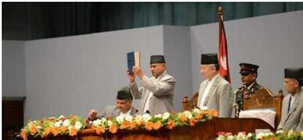
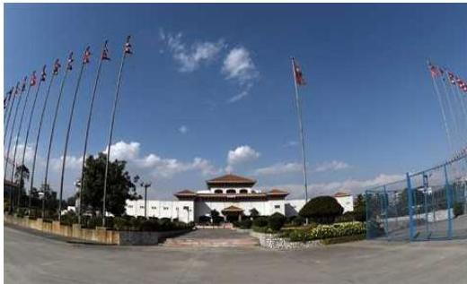

नेपालको संवैधानिक विकासक्रम
३.१ नेपालको संवैधानिक विकासक्रम
राणाशासनको अन्त्यतिर २००४ साल माघ १४ का दिन राणा प्रधानमन्त्री पद्य शमशेरले घोषणा गरेको नेपाल सरकारको वैधानिक कानुन नै नेपालको पहिलो संविधान हो। यसअघि नेपालको इतिहासमा कुनै पनि लिखित वा अलिखित संविधानको रूपरेखा पाइँदैन। नेपालको संवैधानिक विकासलाई निम्नानुसार उल्लेख गर्न सकिन्छ :
३.१.१ नेपाल सरकारको वैधानिक कानुन, २००४
यो नेपालको पहिलो संविधान हो। वि.सं. २००४ माघ १३ गते विशालनगर दरबारबाट घोषित यो विधान वि.सं. २००५ वैशाख १ गतेदेखि लागु गरिने भनी उल्लेख गरिएको थियो। तर २००४ फागुन १८ गते प्रधानमन्त्री पद्य शमशेर भारतको प्रवासमा गएका र उनी नेपाल नफर्की उहाँबाट राजीनामा पठाएका थिए। उनका उत्तराधिकारी मोहन शमशेर जनतालाई कुनै अधिकार दिने पक्षमा नरहेकाले यो विधान लागु हुन सकेन। यो वैधानिक कानुन निर्माणका लागि भारतीय संविधान विशेषज्ञहरू श्रीप्रकाश, डा. रामउग्र सिंह र रघुनाथ सिंहलाई बोलाइएको थियो। देशमा व्यापक परिवर्तन गर्न २००५ वैशाख १ गतेदेखि लागु हुने गरी घोषणा भएको यो संविधान पहिलो थियो। यो वैधानिक कानुनमा ६ भाग, ६८ धारा र १ अनुसूची थिए।
३.१.२ नेपालको अन्तरिम शासन विधान, २००७
राणाशासनको अन्त्यपछि वि.सं. २००७ साल फागुन ७ गते राजा त्रिभुवनबाट नेपालको अन्तरिम शासन विधान २००७ घोषणा भयो। यसमा राज्यका नीति, निर्देशक सिद्धान्तहरू, मन्त्रिमण्डल, आर्थिक कार्य प्रणाली, प्रधान न्यायालय, लोकसेवा आयोग, निर्वाचन आयोग, संसद् सभाको व्यवस्था गरिएको थियो। यसमा ७ भाग, ७४ धारा र ४ परिच्छेद थिए। २००७ चैत्र २९ गतेदेखि पूर्ण रूपमा लागु भई कार्यान्वयनमा आएको यो संविधानमा ६ पटकसम्म संशोधन गरिएको थियो।
नेपाल परिचय/१२३
१२४/नेपाल परिचय
३.१.३ नेपाल अधिराज्यको संविधान, २०१५
वि.सं. २०१४ चैत्र ३ गतेका दिन भगवतीप्रसाद सिंहको अध्यक्षतामा गठित बेलायती संविधानविद् सर आइभर जेनिङसमेत संलग्न भएको पाँच-सदस्यीय संविधान मस्यौदा समितिले १० महिनाको अवधिमा मस्यौदा तयार गरी राजा महेन्द्रसम्म भइरहुत गरे। यस कमिसनका अन्य सदस्यहरू होराप्रसाद जोशी, रामराज पन्त र सूर्यप्रसाद उपाध्याय थिए। यो संविधान राजा महेन्द्रबाट २०१५ साल फागुन १ गते जारी भयो। संविधानको धारा ७३ र ७५ तुरुन्त लागु भए भने बाँकी धाराहरू २०१६ सालमा लागु भए। यसै संविधानको आधारमा ७ फागुन २०१५ देखि मुलुकमा प्रथम आमनिर्वाचन भयो। यसमा १०९ सदस्यीय प्रतिनिधिसभा, मन्त्रिमण्डल प्रतिनिधिसभाप्रति उत्तरदायी हुने, कार्यपालिका, व्यवस्थापिका, स्वतन्त्र न्यायपालिका, लोकसेवा आयोग, हिसाब जाँच र नागरिकहरूको मौलिक अधिकारहरूको व्यवस्था थियो। १० भाग, ७७ धारा र ३ अनुसूची भएको यो संविधान राजा महेन्द्रबाट वि.सं. २०१९ मा खारेज भयो।
३.१.४ नेपालको संविधान, २०१९
२०१७ पौष १ को राजा महेन्द्रको शाही कदमले २०१५ सालको संविधान अपदस्त भयो। वि.सं. २०१९ वैशाख २६ गतेका दिन ऋषिकेश शाहको अध्यक्षतामा शम्भुप्रसाद ज्ञवाली, प्रकाशबहादुर खत्री, अङ्गुरबाबा जोशी, डम्बरनारायण यादव सदस्यहरू र कुलशेखर शर्मा सदस्य-सचिव भएको संविधान निर्माण समितिले तयार गरेको मस्यौदामा मन्त्रिमण्डलका सदस्यहरूको समेत राय सल्लाह लिई यो संविधान वि.सं. २०१९ पौष १ गते राजा महेन्द्रबाट घोषणा भयो। लोकसम्मतिमा आधारित शासन व्यवस्था, विकेन्द्रीकरण र निर्दलीय पञ्चायती व्यवस्था यसका लक्ष्यहरू थिए। यसमा नागरिकहरूको मौलिक हक र कर्तव्य, पञ्चायत प्रणालीका नीति निर्देशक सिद्धान्त, राजसभा, मन्त्रिपरिषद्, लोकसेवा आयोग, कार्यपालिका, व्यवस्थापिका र स्वतन्त्र न्यायपालिकाको व्यवस्था गरिएको थियो। यसमा २०२३ माघ १४ गते पहिलो संशोधन, २०३२ साल मङ्सिर २६ गते दोस्रो संशोधन र २०३७ साल पौष १ गते तेस्रो संशोधन भएको थियो। २० भाग, ९७ धारा र ६ ओटा अनुसूची भएको नेपालको संविधान २०१९ छयालिस सालको जनआन्दोलनअघिसम्म चल्यो र २०४७ सालमा नेपाल अधिराज्यको संविधान २०४७ ले यसलाई विस्थापित गर्यो।
३.१.५ नेपाल अधिराज्यको संविधान, २०४७
जनआन्दोलनको फलस्वरूप निर्दलीय पञ्चायती व्यवस्था २०४६ चैत्र २६ गते धराशायी भयो र २०४७ वैशाख ६ गते नेपाली कांग्रेसका कार्यवाहक सभापति कृष्णप्रसाद भट्टराईको अध्यक्षतामा ११ सदस्यीय अन्तरिम मन्त्रिपरिषद्को गठन भयो। यसै मन्त्रिपरिषद्को कार्यकालमा नेपालको पाँचौँ संविधानको रूपमा वि.सं. २०४७ कात्तिक २३ गते शुक्रबारका दिन नेपाल अधिराज्यको संविधान, २०४७ जारी भएको थियो।
नेपाल परिचय/१२५
२०४६ सालको ऐतिहासिक जनआन्दोलमाफर्त ३० वर्षे पञ्चव्ययती व्यवस्थाको समाप्तिपूछि देशमा नयाँ संविधान निर्माणका निमित्त राजा वीरेन्द्रबाट सर्वोच्च अदालतका न्यायाधीश विश्वनाथ उपाध्यायको अध्यक्षतामा नौ-सदस्यीय “संविधान सुधार सुभाव आयोग” गठन भएको कुरा २०४७ वैशाख २८ गते घोषणा गरिएकामा यसको तीव्र विरोध भयो । २०४७ जेठ १ गते प्रधानमन्त्रीको सुभावबमोजिम मन्त्रिपरिषद्को परामर्शलाई समेत ध्यानमा राखी राजाबाट वि.सं. २०४७ जेठ १६ गते ३ महिनाभित्र आफ्नो सुभाव पेस गर्न पुन: विश्वनाथ उपाध्यायको अध्यक्षतामा नौ-सदस्यीय संविधान सुभाव आयोग गठन गरिएको थियो ।
संवैधानिक राजतन्त्र, बहुदलीय प्रजातन्त्र, संसदीय शासन प्रणाली, जनतामा निहित सार्वभौमसत्ता, स्वतन्त्र र निष्पक्ष न्यायपालिकालाई अपरिवर्तनीय रूपमा स्थापना गरेको यो संविधानले नागरिकहरूको मौलिक हक र स्वतन्त्रताको संरक्षणमा जोड दिएको थियो । यस संविधानमा २३ भाग, १३३ धारा र ३ अनुसूची थिए । यसमा नागरिकको मौलिक हक, राज्यका निर्देशक सिद्धान्त तथा नीतिहरू, श्री ५, राजपरिषद्, कार्यपालिका, व्यवस्थापिका, न्यायपालिका, अख्तियार दुरुपयोग अनुसन्धान आयोग, महालेखा परीक्षक, लोकसेवा आयोग, निर्वाचन आयोग, महान्यायाधिवक्ता आदिको व्यवस्था गरिएको थियो ।
यस संविधानका आधारभूत विशेषता यस प्रकार थिए :
- संविधान देशको मूल कानुनको रूपमा स्विकारिएको,
- सार्वभौमसत्ता नेपाली जनतामा निहित,
- नेपाललाई एक बहुजातीय, बहुभाषिक, प्रजातान्त्रिक, अविभाज्य, सार्वभौमसत्तासम्पन्न, हिन्दु, संवैधानिक राजतन्त्रात्मक अधिराज्यको रूपमा स्वीकार गरिएको,
- नागरिकका मौलिक हक र अधिकारको व्यवस्था,
- राज्यका निर्देशक नीति तथा सिद्धान्तको स्पष्ट व्यवस्था गरिएको,
- कार्यकारिणी अधिकार श्री ५ र मन्त्रिपरिषद्मा रहने व्यवस्था,
- स्वतन्त्र न्यायपालिकाको व्यवस्था गरी न्याय सम्पादन गर्ने अधिकार अदालतलाई प्रदान गरिएको,
- राजपरिषद्, लोकसेवा आयोग, महालेखा परीक्षक, निर्वाचन आयोग, अख्तियार दुरुपयोग अनुसन्धान आयोगजस्ता संवैधानिक निकायको व्यवस्था गरी काम, कर्तव्य र अधिकारको स्पष्ट व्यवस्था गरिएको,
- राजनीतिक दलसम्बन्धी व्यवस्था गरी ५ प्रतिशत महिला उम्मेदवार उठाउनुपर्ने र राष्ट्रिय दलको मान्यता पाउन जम्मा खसेको मतको तीन प्रतिशत मत ल्याउनुपर्ने व्यवस्था,
- सङ्कटकालीन अवस्थाको घोषणा गर्ने अधिकार राजालाई प्रदान गरिएको,
- संवैधानिक परिषद् र राष्ट्रिय सुरक्षा परिषद्को व्यवस्था आदि ।
वि.सं. २०६२/०६३ को जनआन्दोलनको सफलतासँगसँगै यो संविधान पनि निष्क्रिय भयो ।
१२६/नेपाल परिचय
३.१.६ नेपालको अन्तरिम संविधान, २०६३
दोस्रो जनआन्दोलनको सफलताको फलस्वरूप नेपालको इतिहासमा पहिलो पटक जनताका तर्फबाट नेपालको अन्तरिम संविधान, २०६३ माघ १ गते जारी भयो। नेपाल अधिराज्यको संविधान, २०४७ पछि छैटौँ संविधानका रूपमा नेपालको अन्तरिम संविधान, २०६३ जारी भएको हो। यस संविधानको मस्यौदा सर्वोच्च अदालतका पूर्वन्यायाधीश एवम् २०४७ सालको संविधानको मस्यौदा समिति सदस्य लक्ष्मणप्रसाद अर्यालको संयोजकत्वमा गठित १६ सदस्यीय मस्यौदा समितिले तयार गरेको हो। २५ भाग, १६७ धारा भएको यस संविधानमा ४ अनुसूची रहेका थिए। यस संविधानलाई अन्तरिम व्यवस्थापिका-संसद्ले वि.सं. २०६३ माघ १ को राति ११.३५ बजे अनुमोदन गर्यो। यो संविधान १३ पटक संशोधन गरिएको थियो।
नेपालको अन्तरिम संविधान, २०६३ का विशेषता:
- दोस्रो जनआन्दोलनको भावना एवम् सो आन्दोलनका सहभागी आठ राजनीतिक दलको सामूहिक प्रयासबाट निर्मित,
- नेपालको इतिहासमा पहिलो पटक जनताबाट घोषणा भएको संविधान,
- नेपालको सार्वभौमसत्ता एवम् राजकीय सत्ता नेपाली जनतामा निहित,
- नेपाललाई धर्मनिरपेक्ष राष्ट्रको रूपमा स्वीकार गरिएको,
- कार्यकारिणी अधिकार मन्त्रिपरिषद्मा निहित,
- गणतन्त्रको स्थापना,
- राष्ट्राध्यक्षको रूपमा राष्ट्रपतिको व्यवस्था,
- व्यवस्थापिकाको काम संविधानसभाले गर्ने,
- संविधानसभाको गठन हुने आधारको व्यवस्था गरी ६०१ जना सदस्य रहने प्रावधान,
- राष्ट्रिय मानवअधिकार आयोगलाई संवैधानिक अङ्का रूपमा मान्यता,
- निर्वाचनका निमित्त दल दर्ता गर्दा कम्तीमा १० हजार मतदाताको समर्थनसहितको हस्ताक्षर आवश्यक,
- प्रधानसेनापतिको नियुक्ति, मन्त्रिपरिषद्को सीफारिसमा राष्ट्रपतिबाट हुने,
- प्रधानमन्त्रीको अध्यक्षतामा रक्षा, गृह र प्रधामन्त्रीले तोकेका तीन जना मन्त्री रहने गरी राष्ट्रिय सुरक्षा परिषद्को गठन,
- संविधान संशोधन व्यवस्थापिका-संसद्को दुईतिहाइ बहुमतबाट हुन सक्ने,
- प्रधानमन्त्रीको अध्यक्षतामा प्रधानन्यायाधीश, सभामुख, विपक्षी दलको नेता र प्रधानमन्त्रीले तोकेका तीन जना मन्त्रीसहितको संवैधानिक परिषद् गठन हुने व्यवस्था,
- जुनसुकै अदालत, विशेष अदालत, सैनिक या अन्य कुनै अदालत या न्यायिक निकायबाट गरेका सजायलाई मन्त्रिपरिषद्को सीफारिसमा राष्ट्रपतिले माफी मुल्तवी,
परिवर्तन वा कम गर्न सक्ने,
-
मन्त्रिपरिषद्को सीफारिसमा राष्ट्रपतिले नेपाली राजदूत र अन्य विशेष प्रतिनिधिको नियुक्ति गर्ने,
-
राज्यका तर्फबाट दिइने उपाधि, सम्मान र विभूषण मन्त्रिपरिषद्को सीफारिसमा राष्ट्रपतिबाट प्रदान गर्ने,
-
राष्ट्रिय महत्त्वको कुनै पनि विषयमा जनमतसञ्चयक गर्न सकिने प्रावधान,
-
बाधा अड्काउ फुकाउने अधिकार मन्त्रिपरिषद्को सीफारिसमा राष्ट्रपतिमा रहने र त्यसको अनुमोदन एक महिनाभित्र संसदूले गर्ने ।
३.१.७ नेपालको संविधान

तत्कालीन राष्ट्रपति रामवरण यादवज्यू नेपालको संविधान २०७२ जारी गर्नुहुँदै ।
नेपाली जनताले आफ्नो संविधान आफैँ बनाउने दशकौँ लामो चाहनालाई मूर्त रूप दिँदै दोस्रो संविधानसभाद्रारा निर्माण गरिएको नेपालको संविधान २०७२ असोज ३ गते आइतबार जारी भयो । यस संविधानले बहुलवादमा आधारित बहुदलीय प्रतिस्पर्धात्मक सङ्घीय लोकतान्त्रिक गणतन्त्रात्मक संसदीय शासन व्यवस्था अंगीकार गरेको छ ।
३.१.७.१. नेपालको संविधानका विशेषताहरू
-
दोस्रो संविधानसभाले बनाएको सङ्घीय लोकतान्त्रिक गणतन्त्र नेपालको संविधान राष्ट्रपतिबाट २०७२ साल असोज ३ गते जारी भएको,
-
नेपालको इतिहासमा पहिलोपल्ट संविधानसभाले निर्माण गरी जारी गरेको संविधान,
-
नेपालको सार्वभौमसत्ता एवम् राजकीय सत्ता नेपाली जनतामा निहित,
-
यस संविधानमा विभिन्न ३१ ओटा मौलिक हकहरूको व्यवस्था गरिएको,
-
प्रत्येक नागरिकका लागि चारओटा कर्तव्य तोकिएको,
नेपाल परिचय/१२७
१२८/नेपाल परिचय
-
सङ्घीय लोकतान्त्रिक गणतन्त्र नेपालको मूल संरचना सङ्घ, प्रदेश तथा स्थानीय तह गरी तीन तहको हुने र नेपालमा सातओटा प्रदेश रहने व्यवस्था गरिएको,
-
नेपालको राज्यशक्तिको प्रयोग सङ्घ, प्रदेश र स्थानीय तहले संविधान तथा कानुनबमोजिम गर्ने व्यवस्था,
-
सङ्घ, प्रदेश र स्थानीय तहबीच राज्यशक्तिको बाँडफाँट गरिएको,
-
राष्ट्राध्यक्षको रूपमा राष्ट्रपति रहने व्यवस्था,
-
नेपालको कार्यकारिणीको अधिकार यो संविधान र कानुनबमोजिम मन्त्रिपरिषद्मा निहित रहने व्यवस्था,
-
राष्ट्रपति र उपराष्ट्रपतिको निर्वाचन फरक-फरक लिङ्ग वा समुदायको प्रतिनिधित्व हुने गरी गर्नुपर्ने व्यवस्था,
-
२७५ सदस्यीय प्रतिनिधिसभा र ५९ सदस्यीय राष्ट्रिय सभा नामका दुई सदनसहितको एक सङ्घीय व्यवस्थापिकाको व्यवस्था,
-
सङ्घीय सदनमा प्रतिनिधित्व गर्ने प्रत्येक राजनीतिक दलबाट निर्वाचित कुल सदस्य सङ्ख्याको कस्तीमा एकतिहाइ सदस्य महिला हुनुपर्ने प्रावधान,
-
प्रतिनिधिसभाको सभामुख र उपसभामुखमध्ये एक जना महिला हुने गरी निर्वाचन गर्नुपर्ने व्यवस्था गरिएको,
-
राष्ट्रिय सभाको अध्यक्ष र उपाध्यक्षमध्ये एक जना महिला हुने गरी निर्वाचन गर्नुपर्ने व्यवस्था,
-
प्रधानमन्त्री नियुक्त भएको पहिलो दुई वर्षसम्म र एक पटक राखेको अविश्वासको प्रस्ताव असफल भएको एक वर्षभित्र अविश्वासको प्रस्ताव पेस गर्न नपाउने व्यवस्था,
-
नेपालको सार्वभौमिकता, भौगोलिक अखण्डता, स्वाधीनता र जनतामा निहित सार्वभौमसत्ताको प्रतिकूल हुने गरी यो संविधान संशोधन गर्न नसकिने,
-
प्रदेशको कार्यकारिणी अधिकार यो संविधान र प्रदेश कानुनबमोजिम प्रदेश मन्त्रिपरिषद्मा निहित हुने,
-
प्रत्येक प्रदेशमा नेपाल सरकारको प्रतिनिधिको रूपमा राष्ट्रपतिद्वारा नियुक्त प्रदेश प्रमुख रहने व्यवस्था,
-
प्रदेशको मन्त्रिपरिषद् मुख्यमन्त्रीको अध्यक्षतामा गठन हुने,
-
प्रदेशको व्यवस्थापिका एकसदनात्मक हुने र यसको नाम प्रदेश सभा रहने,
-
प्रदेश सभाका साठी प्रतिशत सदस्य पहिलो हुने निर्वाचित हुने निर्वाचन प्रणालीबमोजिम र चालिस प्रतिशत सदस्य समानुपातिक निर्वाचन प्रणालीबमोजिम निर्वाचित हुने व्यवस्था,
-
स्थानीय तहको कार्यकारिणी अधिकार यो संविधान र सङ्घीय कानुनको अधीनमा
रही गाउँपालिका वा नगरपालिकामा निहित हुने,
-
जिल्लाभित्रका गाउँपालिका र नगरपालिकाहरूबीच समन्वय गर्न जिल्ला सभाको व्यवस्था,
-
अखिल्यार दुरुपयोग अनुसन्धान आयोग, महालेखा परीक्षक, लोकसेवा आयोग, निर्वाचन आयोग, राष्ट्रिय मानव अधिकार आयोग, राष्ट्रिय प्राकृतिक स्रोत तथा वित्त आयोग, राष्ट्रिय महिला आयोग, राष्ट्रिय दलित आयोग, राष्ट्रिय समावेशी आयोग, आदिवासी जनजाति आयोग, मधेशी आयोग, थारू आयोग र मुस्लिम आयोगको व्यवस्था,
-
नेपालमा बोलिने सबै मातृभाषाहरू राष्ट्रभाषा हुने र देवनागरी लिपिमा लेखिने नेपाली भाषा नेपालको सरकारी कामकाजको भाषा तोकिएको,
-
राष्ट्रिय महत्वको कुनै पनि विषयमा जनमतसञ्चयहबाट निर्णय लिन सक्ने व्यवस्था गरिएको ।
३.१.७.२. नेपालको संविधानमा उल्लेखित मौलिक हक र कर्तव्य
नेपालको संविधानको भाग ३ मा निम्नानुसारका मौलिक हक र कर्तव्यहरूको व्यवस्था गरिएको छ, जसमध्ये मौलिक हक देहायबमोजिम रहेका छन् :
-
सम्मानपूर्वक बाँच्न पाउने हक (धारा १६)
-
स्वतन्त्रताको हक (धारा १७)
-
समानताको हक (धारा १८)
-
सञ्चारको हक (धारा १९)
-
न्यायसम्बन्धी हक (धारा २०)
-
अपराधपीडितको हक (धारा २१)
-
यातनाविरुद्धको हक (धारा २२)
-
निवारक नजरबन्दविरुद्धको हक (धारा २३)
-
छुवाछुत तथा भेदभावविरुद्धको हक (धारा २४)
-
सम्पत्तिको हक (धारा २५)
-
धार्मिक स्वतन्त्रताको हक (धारा २६)
-
सृचनाको हक (धारा २७)
-
गोपनीयताको हक (धारा २८)
-
शोषणविरुद्धको हक (धारा २९)
-
स्वच्छ वातावरणको हक (धारा ३०)
-
शिक्षासम्बन्धी हक (धारा ३१)
नेपाल परिचय/१२९

संसद् भवन, काठमाडौँ
- भाषा तथा संस्कृतिको हक (धारा ३२)
- रोजगारीको हक (धारा ३३)
- श्रमको हक (धारा ३४)
- स्वास्थ्यसम्बन्धी हक (धारा ३५)
- खाद्यसम्बन्धी हक (धारा ३६)
- आवासको हक (धारा ३७)
- महिलाको हक (धारा ३८)
- बालबालिकाको हक (धारा ३९)
- दलितको हक (धारा ४०)
- ज्येष्ठ नागरिकको हक (धारा ४१)
- सामाजिक न्यायको हक (धारा ४२)
- सामाजिक सुरक्षाको हक (धारा ४३)
- उपभोक्ताको हक (धारा ४४)
- देशनिकालाविरुद्धको हक (धारा ४५)
- संवैधानिक उपचारको हक (धारा ४६)
१३०/लेपाल परिचय
नेपाल परिचय/१३१
३.१.७.३ सङ्घीय शासकीय स्वरूप
नेपालको संविधानमा अनुसूची-५ देखि अनुसूची-९ सम्म सङ्घ, प्रदेश र स्थानीय तहका एकल तथा साभा अधिकारका सूचीको निम्नानुसार व्यवस्था गरिएको छ :
अनुसूची-५ (धारा ५७ को उपधारा (१) र धारा १०९ सँग सम्बन्धित) सङ्घको अधिकारको सूची
| क्र.सं. | विषयहरू |
|---|---|
| १ | रक्षा र सेनासम्बन्धी |
| क) राष्ट्रिय एकता र भौगोलिक अखण्डताको संरक्षण | |
| ख) राष्ट्रिय सुरक्षासम्बन्धी | |
| २ | युद्ध र प्रतिरक्षा |
| ३ | हातहतियार, खरखजाना कारखाना तथा उत्पादनसम्बन्धी |
| ४ | केन्द्रीय प्रहरी, सशस्त्र प्रहरी बल, राष्ट्रिय गुप्तचर तथा अनुसन्धान, शान्ति सुरक्षा |
| ५ | केन्द्रीय योजना, केन्द्रीय बैंक, वित्तीय नीति, मुद्रा र बैंकिङ, मौद्रिक नीति, विदेशी अनुदान, सहयोग र ऋण |
| ६ | परराष्ट्र तथा कूटनीतिक मामिला, अन्तर्राष्ट्रिय सम्बन्ध र संयुक्त राष्ट्रसङ्घसम्बन्धी |
| ७ | अन्तर्राष्ट्रिय सन्धि वा सम्भौता, सुपुर्दगी, पारस्परिक कानुनी सहायता र अन्तर्राष्ट्रिय सीमा, अन्तर्राष्ट्रिय सीमा नदी, |
| ८ | दूरसञ्चार, रेडियो फ्रिक्वेन्सीको बाँडफाँट, रेडियो, टेलिभिजन र हुलाक |
| ९ | भन्सार, अन्तःशुल्क, मूल्य अभिवृद्धि कर, संस्थागत आयकर, व्यक्तिगत आयकर, पारिश्रमिक कर, राहदानी शुल्क, भिसा शुल्क, पर्यटन दस्तुर, सेवाशुल्क दस्तुर, दण्ड जरिवाना |
| १० | सङ्घीय निजामती सेवा, न्याय सेवा र अन्य सरकारी सेवा |
| ११ | जलस्रोतको संरक्षण र बहुआयामिक उपयोगसम्बन्धी नीति र मापदण्ड |
१३२/नेपाल परिचय | १२ | अन्तरदेशीय तथा अन्तरप्रदेश विद्युत् प्रसारण लाइन | | --- | --- | | १३ | केन्द्रीय तथ्याङ्क (राष्ट्रिय र अन्तर्राष्ट्रिय मानक र गुणस्तर) | | १४ | केन्द्रीय स्तरका ठुला विद्युत्, सिँचाइ र अन्य आयोजना तथा परियोजना | | १५ | केन्द्रीय विश्वविद्यालय, केन्द्रीय स्तरका प्रज्ञा प्रतिष्ठान, विश्वविद्यालय मापदण्ड र नियमन, केन्द्रीय पुस्तकालय | | १६ | स्वास्थ्य नीति, स्वास्थ्य सेवा, स्वास्थ्य मापदण्ड, गुणस्तर र अनुगमन, राष्ट्रिय वा विशिष्ट सेवाप्रदायक अस्पताल, परम्परागत उपचार सेवा, सरुवा रोग नियन्त्रण | | १७ | सङ्घीय संसद्, सङ्घीय कार्यपालिका, स्थानीय तहसम्बन्धी मामिला, विशेष संरचना | | १८ | अन्तर्राष्ट्रिय व्यापार, विनिमय, बन्दरगाह, क्वारेन्टाइन | | १९ | हवाई उड्डयन, अन्तर्राष्ट्रिय विमानस्थल | | २० | राष्ट्रिय यातायात नीति, रेल तथा राष्ट्रिय लोकमार्गको व्यवस्थापन | | २१ | सर्वोच्च अदालत, उच्च अदालत, जिल्ला अदालत तथा न्याय प्रशासनसम्बन्धी कानुन | | २२ | नागरिकता, राहदानी, भिसा, अध्यागमन | | २३ | आणविक ऊर्जा, वायुमण्डल र अन्तरिक्षसम्बन्धी | | २४ | बौद्धिक सम्पत्ति (पेटेन्ट, डिजाइन, ट्रेडमार्क र प्रतिलिपि अधिकारसमेत) | | २५ | नापतौल | | २६ | खानी उत्खनन | | २७ | राष्ट्रिय तथा अन्तर्राष्ट्रिय वातावरण व्यवस्थापन, राष्ट्रिय निकुञ्ज, वन्यजन्तु आरक्ष तथा सिमसार क्षेत्र, राष्ट्रिय वन नीति, कार्बन सेवा | | २८ | बिमा नीति, धितोपत्र, सहकारी नियमन | | २९ | भूउपयोग नीति, बस्ती विकास नीति, पर्यटन नीति, वातावरण अनुकूलन | | ३० | फौजदारी, देवानी कानुनको निर्माण | | ३१ | सुरक्षित छापाखाना |
| ३२ | सामाजिक सुरक्षा र गरिबी निवारण |
|---|---|
| ३३ | संवैधानिक निकायहरू, राष्ट्रिय महत्वका आयोगहरू |
| ३४ | पुरातात्त्विक महत्वका स्थान र प्राचीन स्मारक |
| ३५ | सङ्घ, प्रदेश र स्थानीय तहको अधिकारको सूचीमा वा साभा सूचीमा उल्लेख नभएको कुनै विषय तथा यो संविधान र सङ्घीय कानुनमा नतोकएको विषय |
अनुसूची- ६
(धारा ५७ को उपधारा (२), धारा १६२ को उपधारा (४), धारा १९७, धारा २३१ को उपधारा (३), धारा २३२ को उपधारा (७), धारा २७४ को उपधारा (४) र धारा २ ९६ को उपधारा (४) सँग सम्बन्धित)
प्रदेशका अधिकारको सूची
| क्र.सं. | विषयहरू |
|---|---|
| १. | प्रदेश प्रहरी प्रशासन र शान्ति सुरक्षा |
| २. | नेपाल राष्ट्र बैंकको नीतिअनुरूप वित्तीय संस्थाहरूको सञ्चालन, सहकारी संस्था, केन्द्रको सहमतिमा वैदेशिक अनुदान र सहयोग |
| ३. | रेडियो, एफ.एम, टेलिभिजन सञ्चालन |
| ४. | घरजगा रजिस्ट्रेसन शुल्क, सवारीसाधन कर, मनोरञ्जन कर, विज्ञापन कर, पर्यटन, कृषि आयमा कर, सेवाशुल्क दस्तुर, दण्ड जरिवाना |
| ५. | प्रदेश निजामती सेवा र अन्य सरकारी सेवा |
| ६. | प्रदेश तथ्याङ्क |
| ७. | प्रदेशस्तरको विद्युत, सिँचाइ र खानेपानी सेवा, परिवहन |
| ८. | प्रदेश विश्वविद्यालय, उच्च शिक्षा, पुस्तकालय, सङ्ग्रहालय |
| ९. | स्वास्थ्य सेवा |
| १०. | प्रदेश सभा, प्रदेश मन्त्रिपरिषद्सम्बन्धी |
| ११. | प्रदेशभित्रको व्यापार |
नेपाल परिचय/१३३
| १२. | प्रदेश लोकमार्ग |
|---|---|
| १३. | प्रदेश अनुसन्धान ब्युरो |
| १४. | प्रदेश सरकारी कार्यालयहरूको भौतिक व्यवस्थापन र अन्य आवश्यक विषय |
| १५. | प्रदेश लोकसेवा आयोग |
| १६. | भूमि व्यवस्थापन, जग्गाको अभिलेख |
| १७. | खानी अन्वेषण र व्यवस्थापन |
| १८. | भाषा, लिपि, संस्कृति, ललितकला र धर्मको संरक्षण र प्रयोग |
| १९. | प्रदेशभित्रको राष्ट्रिय वन, जल उपयोग तथा वातावरण व्यवस्थापन |
| २०. | कृषि तथा पशु विकास, कलकारखाना, औद्योगीकरण, व्यापार व्यवसाय, यातायात, |
| २१. | गुडी व्यवस्थापन |
अनुसूची– ७
(धारा ५७ को उपधारा (३), धारा १०९, धारा १६२ को उपधारा (४), धारा १९७ सँग सम्बन्धित)
सञ्चय र प्रदेशको साभा अधिकारको सूची
| क्र.सं. | विषयहरू |
|---|---|
| १. | फौजदारी तथा देवानी कार्यविधि र प्रमाण र शपथ (कानुनी मान्यता, सार्वजनिक कार्य र अभिलेख र न्यायिक प्रक्रिया) |
| २. | आवश्यक वस्तु तथा सेवाको आपूर्ति, वितरण, मूल्य नियन्त्रण, गुणस्तर र अनुगमन |
| ३. | देशको सुरक्षासँग सम्बन्धित विषयमा निवारक नजरबन्द, कारागार तथा हिरासत व्यवस्थापन र शान्ति सुरक्षाको व्यवस्था |
| ४. | एक प्रदेशबाट अर्को प्रदेशमा अभियुक्त, थुनुवा र कैदीको स्थानान्तरण |
| ५. | पारिवारिक मामिला (विवाह, सम्पत्ति हस्तान्तरण, सम्बन्धविच्छेद, लोपोन्मुख, टुहुरा, धर्मपुत्र, धर्मपुत्री उत्तराधिकार र संयुक्त परिवार) सम्बन्धी कानुन |
१३४/नेपाल परिचय
| ६. | सम्पत्ति प्राप्ति, अधिग्रहण र अधिकारको सूचना |
|---|---|
| ७. | करार, सहकारी, साझेदारी र एजेन्सीसम्बन्धी |
| ८. | टाट पल्टेको र दामासाहीसम्बन्धी |
| ९. | औषधि र विषादी |
| १०. | योजना, परिवार नियोजन र जनसङ्ख्या व्यवस्थापन |
| ११. | सामाजिक सुरक्षा र रोजगारी, ट्रेड युनियन, औद्योगिक विवादको समाधान, श्रमिकका हक, अधिकार र विवादसम्बन्धी कार्य |
| १२. | कानुन व्यवसाय, लेखापरीक्षण, इन्जिनियरिङ, चिकित्सा, आयुर्वेद चिकित्सा, पशुचिकित्सा, आम्ची र अन्य पेसा |
| १३. | प्रदेश सीमा नदी, जलमार्ग, वातावरण संरक्षण, जैविक विविधता |
| १४. | सञ्चारमाध्यमसम्बन्धी |
| १५. | उद्योग तथा खनिज र भौतिक पूर्वाधार |
| १६. | क्यासिनो, चिठ्ठा |
| १७. | प्राकृतिक तथा गैरप्राकृतिक विपद् पूर्वतयारी, उद्धार तथा राहत र पुनर्लाभ |
| १८. | पर्यटन, खानेपानी तथा सरसफाइ |
| १९. | चलचित्र, सिनेमा हल, खेलकुद |
| २०. | बिमा व्यवसाय सञ्चालन र व्यवस्थापन |
| २१. | गरिबी निवारण र औद्योगीकरण |
| २२. | वैज्ञानिक अनुसन्धान, विज्ञान प्रविधि र मानव संसाधन विकास |
| २३. | अन्तरप्रादेशिक रूपमा फैलिएको जड्गल, हिमाल, वन संरक्षण क्षेत्र, जल उपयोग |
| २४. | भूमि नीति र सोसम्बन्धी कानुन |
| २५. | रोजगारी र बेरोजगार सहायता |
नेपाल परिचय/१३५
अनुसूची– ८
(धारा ५७ को उपधारा (४), धारा २१४ को उपधारा (२), धारा २२१ को उपधारा (२) र धारा २२६ को उपधारा (१) सँग सम्बन्धित)
स्थानीय तहको अधिकारको सूची
| क्र.सं | विषयहरू |
|---|---|
| १. | नगर प्रहरी |
| २. | सहकारी संस्था |
| ३. | एफ.एम. सञ्चालन |
| ४. | स्थानीय कर (सम्पत्ति कर, घरबहाल कर, घरजगा रजिस्ट्रेशन शुल्क, सवारीसाधन कर), सेवाशुल्क दस्तुर, पर्यटन शुल्क, विज्ञापन कर, व्यवसाय कर, भूमिकर (मालपोत), दण्ड जरिवाना, मनोरञ्जन कर, मालपोत सञ्चालन |
| ५. | स्थानीय सेवाको व्यवस्थापन |
| ६. | स्थानीय तथ्याङ्क र अभिलेख सङ्कलन |
| ७. | स्थानीयस्तरका विकास आयोजना तथा परियोजनाहरू |
| ८. | आधारभूत र माध्यमिक शिक्षा |
| ९. | आधारभूत स्वास्थ्य र सरसफाइ |
| १०. | स्थानीय बजार व्यवस्थापन, वातावरण संरक्षण र जैविक विविधता |
| ११. | स्थानीय सडक, ग्रामीण सडक, कृषि सडक, सिँचाइ |
| १२. | गाउँ सभा, नगर सभा, जिल्ला सभा, स्थानीय अदालत, मेलमिलाप र मध्यस्थताको व्यवस्थापन |
| १३. | स्थानीय अभिलेख व्यवस्थापन |
| १४. | घरजगा धनी पुर्जा वितरण |
| १५. | कृषि तथा पशुपालन, कृषि उत्पादन व्यवस्थापन, पशु स्वास्थ्य, सहकारी |
१३६/नेपाल परिचय
| १६. | ज्येष्ठ नागरिक, अपांगता भएका व्यक्ति र अशक्तहरूको व्यवस्थापन |
|---|---|
| १७. | बेरोजगारको तथ्याङ्क सङ्कलन |
| १८. | कृषि प्रसारको व्यवस्थापन, सञ्चालन र नियन्त्रण |
| १९. | खानेपानी, साना जलविद्युत् आयोजना, वैकल्पिक ऊर्जा |
| २०. | विपद् व्यवस्थापन |
| २१. | जलाधार, वन्यजन्तु, खानी तथा खनिज पदार्थको संरक्षण |
| २२. | भाषा, संस्कृति र ललितकलाको संरक्षण र विकास |
अनुसूची- ९
(धारा ५७ को उपधारा (५), धारा १०९, धारा १६२ को उपधारा (४), धारा १९७, धारा २१४ को उपधारा (२), धारा २२१ को उपधारा (२) र धारा २२६ को उपधारा (१) सँग सम्बन्धित)
सङ्घ, प्रदेश र स्थानीय तहको अधिकारको साभा सूची
| क्र.सं. | विषयहरू |
|---|---|
| १. | सहकारी |
| २. | शिक्षा, खेलकुद र पत्रपत्रिका |
| ३. | स्वास्थ्य |
| ४. | कृषि |
| ५. | विद्युत्, खानेपानी, सिँचाइ जस्ता सेवाहरू |
| ६. | सेवाशुल्क, दस्तुर, दण्ड जरिवाना तथा प्राकृतिक स्रोतबाट प्राप्त रोयल्टी, पर्यटन शुल्क |
| ७. | वन, जड्गल, वन्यजन्तु, चराचुरुङ्गी, जल उपयोग, वातावरण, पर्यावरण तथा जैविक विविधता |
| ८. | खानी तथा खनिज |
| ९. | विपद् व्यवस्थापन |
| १०. | सामाजिक सुरक्षा र गरिबी निवारण |
नेपाल परिचय/१३७
| ११. | व्यक्तिगत घटना, जन्म, मृत्यु, विवाह र तथ्याङ्क |
|---|---|
| १२. | पुरातत्त्व, प्राचीन स्मारक र सङ्ग्रहालय |
| १३. | सुकुमबासी व्यवस्थापन |
| १४. | प्राकृतिक स्रोतबाट प्राप्त रोयल्टी |
| १५. | सवारीसाधन अनुमति |
१३८/नेपाल परिचय
परिच्छेद : चाट